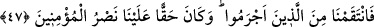

ALLÂH’IN RAHMETİNİN
ESERLERİNE BİR BAK
47. Andolsun ki, biz senden önce kendi kavimlerine nice peygamberler gönderdik
de onlara açık deliller getirdiler. (Onları dinlemeyip) günaha dalanların ise
cezâlarını hakkıyla vermişizdir. Mü’minlere yardım etmek de bize düşer.
48. Allah O’dur ki, rüzgârları gönderir, bunlar da bulutu kaldırır. Derken, Allah
onu gökte dilediği gibi yayar ve parça parça eder; nihâyet arasından yağmurun
çıktığını görürsün. Allah dilediği kullarına yağmuru nasip edince, onlar
seviniverirler.
49. Oysa onlar, daha önce, üzerlerine yağmur yağdırılmasından iyice ümitlerini
kesmişlerdi.
50. Allâh’ın rahmetinin eserlerine bir bak: Arzı, ölümünün ardından nasıl
diriltiyor! Şüphesiz O, ölüleri de mutlaka diriltecektir. O, her şeye kadirdir.
51. Andolsun ki, bir rüzgâr göndersek de onu (ekini) sararmış görseler, ardından
muhakkak nankörlüğe başlarlar.
52. (Rasûlüm!) Elbette sen ölülere duyuramazsın; arkalarını dönüp giderlerken
sağırlara o dâveti işittiremezsin.
53. Körleri de sapıklıklarından (vazgeçirip) doğru yola iletemezsin. Ancak
teslimiyet göstererek âyetlerimize îman edenlere duyurabilirsin.